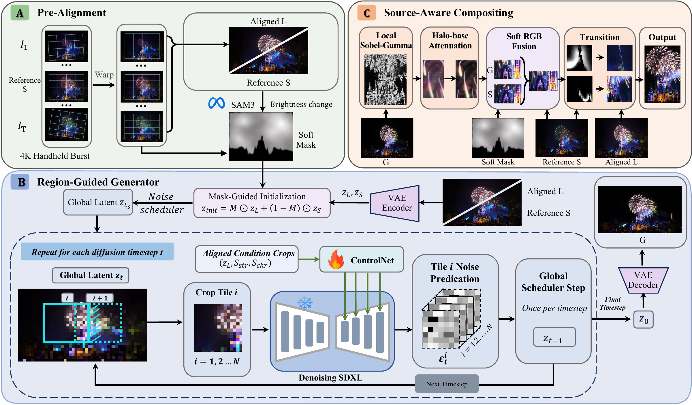

Computational photography
HLTFusionRegion-Guided Fusion for
Handheld Light-Trail Photography
Fireworks / HLTFusion output
Visual comparison
Choose a scene and a method for each half. The two halves meet at the center of the same frame.
Fireworks
Select Wipe to move the divider.
These images could not be loaded.
Overview
A burst of short exposures records where the light moved. A single frame records what stood still.
Handheld light-trail photography needs both. Camera shake blurs stationary structures when frames are stacked, while diffuse brightness can hide the fine paths of moving lights. HLTFusion combines an aligned temporal aggregate with a short-exposure reference to preserve the trails and the surrounding scene.
For training, we edit temporal-maximum images from tripod videos to produce pseudo-reference targets. We screen those targets for visual quality and consistency with the source.
On 49 handheld sequences, HLTFusion averages 0.004 mean absolute RGB error against the reference in static regions, compared with 0.056 for Google-style. Table 1 of the paper measures this on a shared mask, with RGB values in [0, 1].
Method
A shared soft mask guides generation and the final blend with the reference frame.

User study
Across 24 scenes, 22 participants ranked results for consistency with the input and for overall appearance. Participants favored HLTFusion over both editors for input consistency and favored the editors for appearance.
| Compared with | Input consistency | Appearance |
|---|---|---|
| GPT Image 2 | 77.6% | 35.7% |
| FLUX.2 klein | 90.8% | 40.6% |